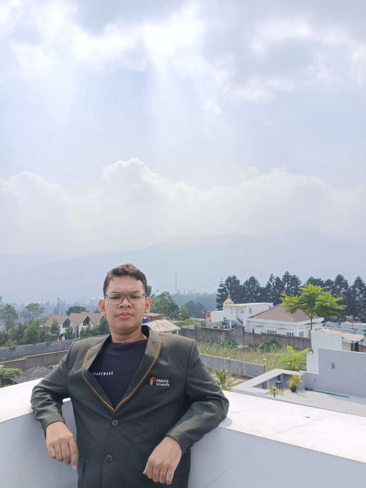
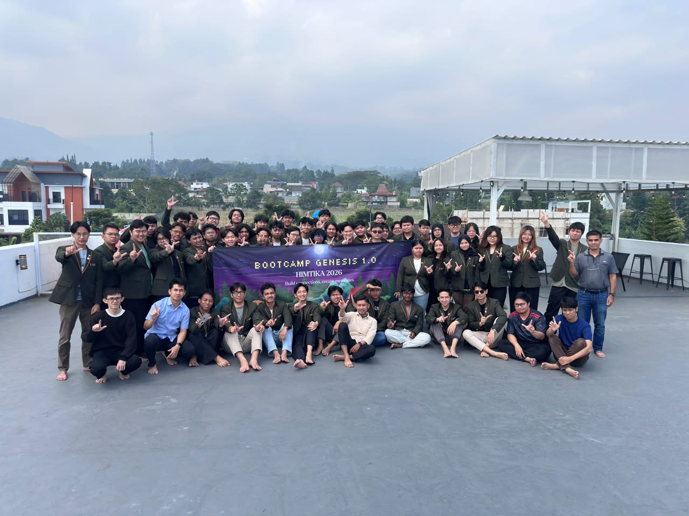
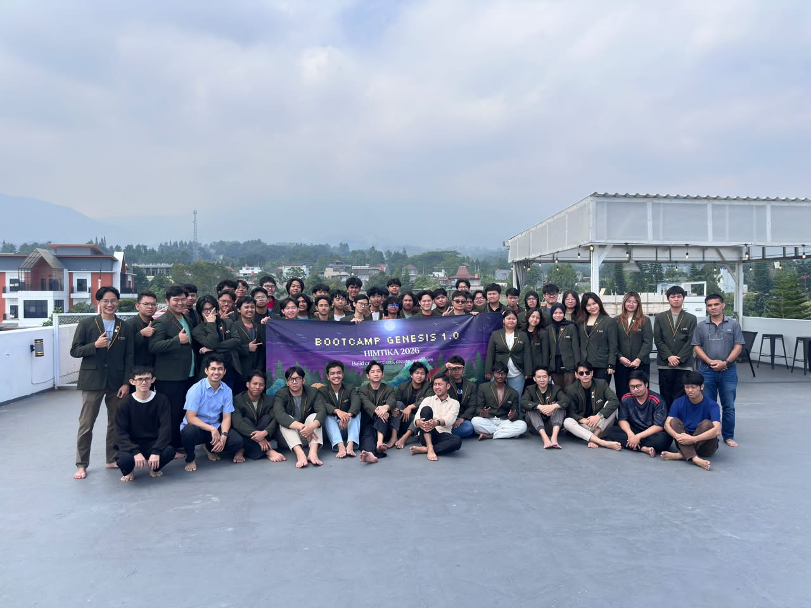
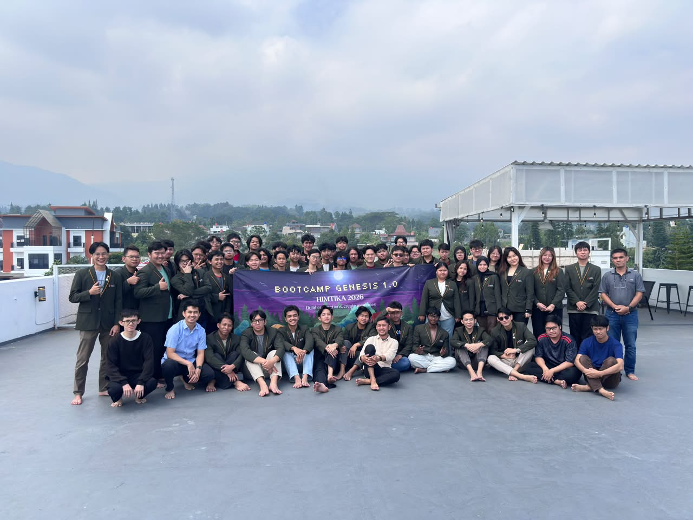
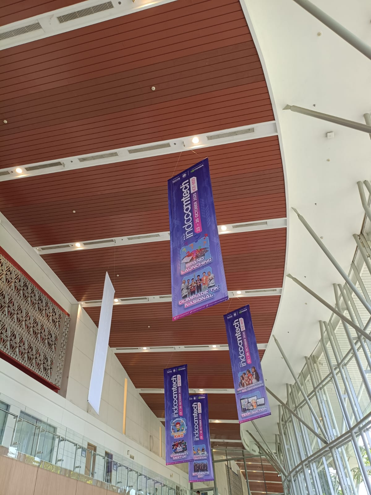
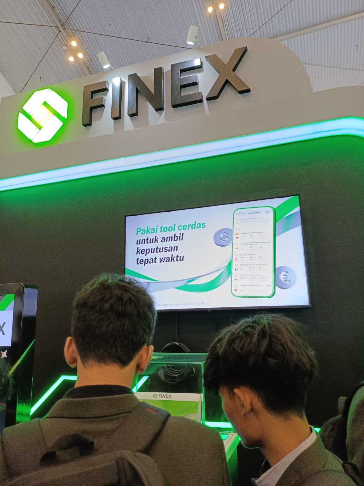
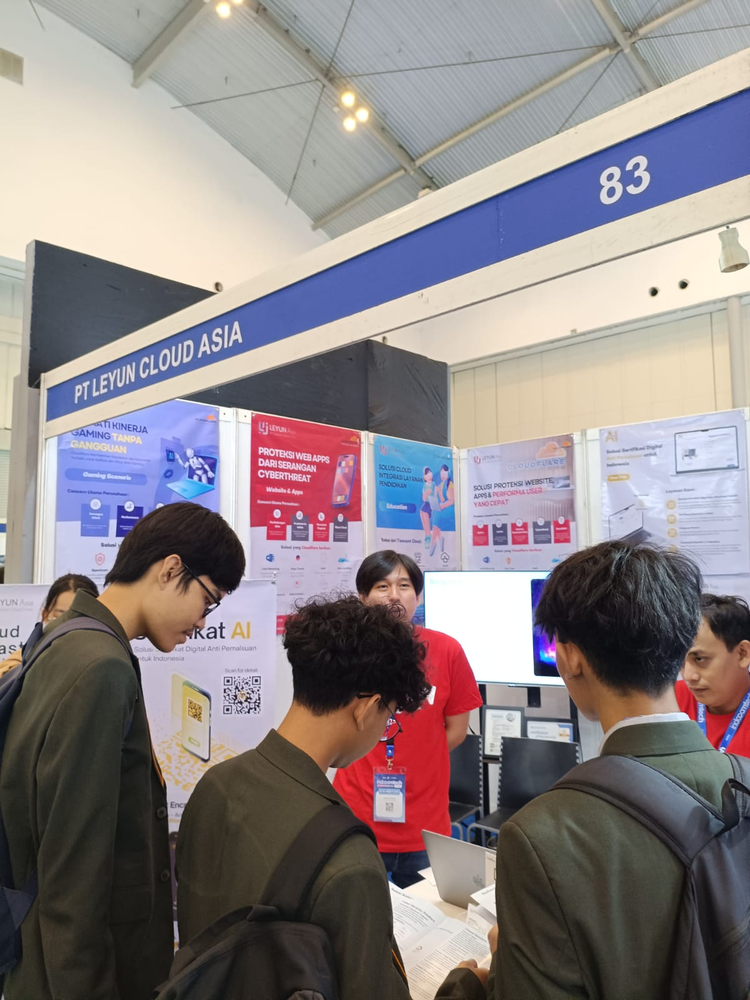
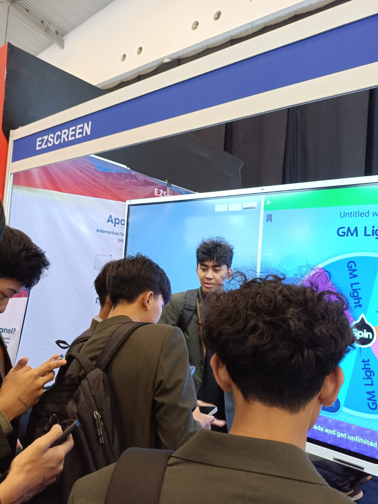

Hi There! 👋🏻
I'M SINDAR FELIX SIHOLE
"Merancang Antarmuka yang Indah, Fungsional, dan Bermakna bagi Banyak Orang."
LET ME INTRODUCE MYSELF
Saya adalah mahasiswa Informatika semester 3 di Pradita University sekaligus putra Indonesia yang bersemangat di dunia frontend development.
Bagi saya, membangun antarmuka web bukan sekadar menulis kode, tetapi memadukan estetika desain, kenyamanan pengguna, dan ide inovatif yang benar-benar berguna.
Saya mahir dan terbiasa dengan teknologi utama seperti
HTML, CSS, JavaScript, dan React.js.
Bidang minat utama saya adalah membangun tampilan antarmuka web yang inovatif, interaktif, dan modern. Saya terbiasa memecahkan masalah kode secara mandiri dan mengoptimalkannya dengan bantuan Kecerdasan Buatan (AI) sebagai akselerator berpikir.
Dalam kerja tim, saya menjunjung tinggi nilai gotong royong dan integritas, serta aktif memegang peran penting pada proyek akademik maupun kolaborasi.
Pradita University • Sem 3
Know Who I'M

Halo Semuanya, Saya Sindar Felix Sihole dari Indonesia.
Saat ini saya sedang menempuh pendidikan di Pradita University, Program Studi Informatika (Semester 3).
Fokus studi saya adalah memperkuat fondasi awal ilmu informatika, logika pemrograman, algoritma struktur data, serta dasar-dasar rekayasa perangkat lunak modern.
Di luar coding teknis, berikut adalah beberapa aktivitas dan keahlian kreatif yang saya sukai:
- Merancang UI/UX & Prototipe Antarmuka di Figma
- Desain Visual Grafis & Publikasi Media di Canva
- Problem-Solving Mandiri & Eksplorasi Perkembangan AI
- Kolaborasi Tim & Menjunjung Semangat Gotong Royong
"Menyatukan Inovasi Desain Antarmuka dan Solusi Digital untuk Kemajuan Bersama!"
Professional Skillset
Tools I use
My Recent Works
Daftar proyek tugas mata kuliah (Kewarganegaraan & Pancasila), proyek rekayasa perangkat lunak, serta rekam jejak WordPress.
Videografis Kewarganegaraan
Karya video bertema hak, kewajiban, dan peran warga negara dalam menjaga persatuan di era informasi digital.
Mengatur dan memantau progres editing videografis agar sesuai jadwal dan konsep yang disepakati, serta memberikan saran dan kritik yang membangun terhadap hasil video demi meningkatkan kualitas akhirnya.
Podcast Kewarganegaraan
Diskusi audio interaktif seputar isu kewarganegaraan, program kemasyarakatan (MBG, sekolah penerima manfaat, dan SPPG).
Mencari dan menyusun materi riset tentang program MBG, sekolah penerima manfaat, dan SPPG sebagai bahan pertanyaan serta landasan diskusi podcast.
Videografis Pancasila
Karya video animasi yang mengangkat nilai-nilai luhur Pancasila, kebersamaan, dan toleransi dalam kehidupan bermasyarakat.
Membuat animasi gerakan sendiri dengan merekam (take) video gerakan saya, lalu menjadikannya dasar animasi sekaligus mengambil suaranya langsung dari rekaman take video tersebut.
Podcast Pancasila
Diskusi audio yang mengupas penerapan nilai Pancasila secara santai, komunikatif, dan mudah dipahami oleh generasi muda.
Bertindak sebagai host: mengajukan pertanyaan kepada narasumber, menyimak, lalu menerima dan merangkum jawabannya agar alur diskusi tetap hidup dan mudah dipahami.
Blog Kelompok 4 Kewarganegaraan
Pusat dokumentasi digital Kelompok 4 yang memuat proposal, laporan kegiatan, podcast, dan video kegiatan lengkap.
Menghubungkan portofolio pribadi ini ke platform induk dokumentasi kelompok dan mempertanggungjawabkan kontribusi spesifik saya di dalam tim.
Sistem Antar-Jemput Servis Kacamata
Aplikasi web yang memudahkan pelanggan mengirim kacamata untuk perbaikan dan penggantian lensa melalui layanan antar-jemput tanpa harus ke toko.
Fullstack Developer — Merancang dan membangun tampilan antarmuka (frontend) sekaligus logika server dan basis data (backend) sistem.
FoodHub: Platform Resep Makanan
Website interaktif tempat pengguna menemukan, membaca, dan berbagi ragam resep makanan nusantara maupun internasional dengan layout modern.
Frontend Developer — Merancang dan membangun tampilan antarmuka FoodHub agar estetik, rapi, responsif, dan mudah digunakan.
Rekam Jejak Blog (3 Semester)
Dokumentasi tugas mata kuliah umum/karakter (MPK) selama di Pradita University. Refleksi pembelajaran tersedia langsung di dalam masing-masing tautan blog.
Agama
Dokumentasi penugasan dan refleksi pembelajaran mata kuliah Agama.
Pancasila
Halaman Portofolio Pancasila yang merangkum karya, video, podcast, dan tugas kelompok.
Kewarganegaraan
Pusat dokumentasi kegiatan Kelompok 4 (proposal, podcast, videografi, dan laporan akhir).
Event & Experience
Dokumentasi aktivitas dan kegiatan di luar perkuliahan untuk memperluas koneksi serta wawasan industri teknologi.
Bootcamp Genesis 1.0
Mengikuti malam keakraban (makrab) mahasiswa Informatika yang dikemas dalam bentuk bootcamp. Kegiatan ini mempererat hubungan antar mahasiswa dan pengurus HIMTIKA, serta membangun rasa kebersamaan, kepemimpinan, dan solidaritas dalam lingkungan program studi Informatika Pradita University.



Indocomtech 2025
Mengunjungi pameran teknologi dan komputer terbesar di Indonesia, Indocomtech 2025. Mengobservasi langsung tren perkembangan perangkat keras, kecerdasan buatan, keamanan siber, dan interaktivitas digital dari para pelaku industri terkemuka:



